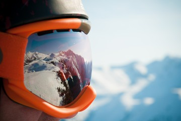

Conoce nuesra escuela
Experiencia, técnica y pasión por la montaña.

La pasión por el deporte ⛷️
Somos una escuela de esquí especializada en todo tipo de deportes invernales, con profesores titulados, altamente cualificados y con gran experiencia en la enseñanza, así como en la estación donde se imparten las clases. Comienza a esquiar o hacer Snow desde los inicios o perfecciona tu técnica para aumentar tu nivel y poder ampliar tus horizontes en la montaña, supervisado siempre por profesores que se encargarán de que cada paso dado en este deporte siempre sea el correcto para asegurar el aprendizaje. Ten la mejor y más gratificante experiencia posible en la nieve con nosotros!. Somos una escuela de esquí especializada en todo tipo de deportes de invierno con profesores titulados, altamente cualificados y con gran experiencia en la enseñanza, así como en la estación donde se imparten las clases. Comienza a esquiar o hacer Snow desde los inicios o perfecciona tu técnica para aumentar tu nivel y poder ampliar tus horizontes en la montaña, supervisado siempre por profesores que se encargarán de que cada paso dado en este deporte siempre sea el correcto para asegurar el aprendizaje. Ten la mejor y más gratificante experiencia posible en la nieve con nosotros!.
Profesores Experimentados
- Titulación: Todos nuestros profesores tienen la titulación minima del TD1
- Especialidad: Freeride, perfeccionamiento técnico y análisis en video.
- Experiencia: Más de 5.000 horas de clases impartidas.
- Idiomas: Clases fluidas en Español, Inglés y Francés.